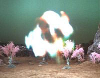
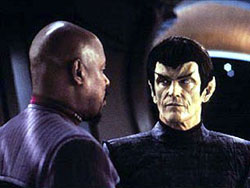
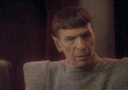
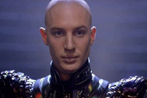
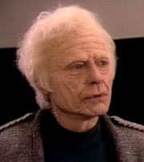
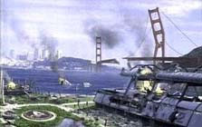
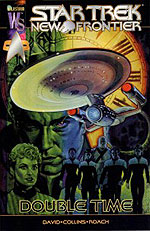
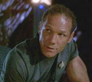

| Desde
meados de Jornada nas Estrelas: Deep Space Nine, diversas questões
sempre estiveram presentes ao fandom: como a guerra
está afetando a Federação como um todo? Onde está Picard e a Enterprise? Como está a Terra? Onde estará os alumnis de Série Clássica que ainda vivem
na era de A Nova Geração? E quanto aos personagens conhecidos
e desenvolvidos na literatura da franquia, que mesmo não-canônica, formam um rico
universo por si mesma? Todas questões válidas, e é com a intenção de as responder que Keith
R.A. DeCandido teve a iniciativa de editar a coletânea
de contos Star Trek: Tales of the Dominion War,
com nada menos do que doze histórias curtas demonstrando como diversos personagens
gerais da franquia estavam envolvidos na Guerra Dominion,
como a própria tripulação da Enterprise, a tripulação da Excalibur da série Star Trek: New Frontier,
o Embaixador Spock, e assim por diante. Os
colegas de fandom que já conhecem meus trabalhos no
Trek Brasilis sabem que apesar de ter em Deep
Space Nine minha série favorita
na franquia, não sou muito fã da Guerra Dominion, por
a ter considerado um arco de trama sofrível, quando muito,
e que retrata um conflito político, econômico, social e militar mal desenvolvido
e mal retratado. Apesar de tudo, sempre me interessei por ler Tales of the Dominion War
pelas mesmas questões gerais do fandom, e assim, uma
revisão dos contos do livro está na ordem do dia para compartilhar um pouco do
livro com os leitores do Trek Brasilis. Vamos
a ela. O
conto de abertura de Tales of the Dominion
War, What Dreams May Come, de autoria
de Michael Jan Friedman, é
tão curto que talvez seja possível este artigo do TB ser quase tão longo,
senão mais. What Dreams May Come é focado em oficial federado de Jean-Luc Picard
quando este serviu como Capitão da USS Stargazer, como
visto na série de livros Star Trek:
Stargazer. Basicamente, a trama lida com a ocupação
Dominion de um planetinha
com civilização pré-dobra. Ter um final previsível que dá para se notar a um parsec de distância não é algo que cai bem para um conto tão
curto. Acontecimentos se desenrolam durante o período entre A Call to Arms (final da 5T de DS9) e A Time to Stand (início da 6T), no início da guerra.  Night of the
Vulture, escrito por Greg Cox, conta a história de como um dos operativos Dominion posicionados na Terra se apossou de dados federados
sobre como botar abaixo o campo minado que fecha o wormhole Bajoriano, e o posterior
translado deste cidadão e valioso segredo para Terok
Nor. Agradou-me particularmente o fato de que uma das velhas
e boas entidades gasosas de Série Clássica (Beta XII-A de
"Day of the Dove") aparece em um conto literário moderno da franquia,
uma aproximação no mínimo inusitada, até onde sei. Mas a trama lida demais com
velhas convenções, particularmente de DS9: a unidade Cardassiana/Dominion retratada na
história parecia uma descarada cópia-carbono de Dukat/Damar com a Fundadora e Weyoun,
mais Jem’Hadar genéricos. Exceto pela entidade gasosa e fazer
alguma referência a background de "Favor
the Bold" (6T de DS9),
que foi a sua equivalência de período com o arco da guerra, nada mais acrescentou
de novo ao todo do conflito.
 O
terceiro conto do livro, The Ceremony of Innocence is Drowned, escrito por Keith R.A. DeCandido,
trata-se de um prelúdio do livro da Pocket Books Star Trek: The Battle of
Betazed, e retrata os primeiros momentos da invasão
Dominion de Betazed, e como
isto foi enfrentado por Lwaxana Troi. Histórias com a mãe de Deanna
Troi nunca estão entre as favoritas do fandom, é verdade, mas achei esta aqui valiosa por ter sido
um agradável conto orientado a personagem, e tendo lido
previamente The Battle of Betazed, devo admitir que
o conto me pareceu terreno familiar. Se passa durante
os acontecimentos de "In the Pale Moonlight",
6T de DS9.
 Blood Sacrifice, escrito por Josepha Sherman e Susan Shwartz, é a oportunidade para a aparição do bom e velho Embaixador
Spock, presença que seria fatal em uma coletânea com
a intenção de Tales of the Dominion
War. A trama lida com Spock,
em sua missão no underground romulano, recebendo uma
discreta visita de Ruanek, um oficial Romulano que Spock ajudou a desertar
para Vulcano durante os eventos do livro Star Trek: Vulcan’s Forge,
e que desde então tem sido um valioso aliado. O romulano
e o vulcanos se unem em uma investigação sobre o recente
assassinato do Imperador Romulano Shiarkiek, e como isto estará influenciado a participação
Romulana no conflito. É um conto sobre Spock
by-the-numbers: temos as franzidas de sobrancelha, temos
porcentagens com três casas decimais, temos citações a velhos amigos, temos algo
fascinante pelo caminho e poraí afora. Sempre terreno
familiar, e embora eu não veja problema algum nestes elementos, teria sido adequado
mais elementos novos sobre a interação de Spock em
Romulus. Como é de se esperar, o conto
se desenrola durante os eventos de "In
the Pale Moonlight".
O
formato de “entradas de diário” de Mirror Eyes, de Heather Jarman e Jeffrey Lang, quinto conto de Tales
of The Dominion
War, nunca foi um formato que me agrada particularmente,
mas até que rendeu bom conto e foi adequado para o cenário,
considerando a natureza oculta de “Seret”, uma operativa
Romulana infiltrado em forças Federadas,
e que acaba tendo mais do que se alistou, quando tem que ajudar o corpo médico
federado em DS9, liderado por Bashir, em erradicar
uma doença entre os vulcanos. Uma turma de peso entra
na briga, e fique de olho pelas aparição da Dra. Beverly Crusher e seu desafeto EMH
Mark I, a versão do “Holodoc”
da Enterprise,
e até mesmo Phlox ganha menção pelo seu trabalho com
pragas vulcanas. Almirante McCoy
também dá as caras, mas não será a última vez no livro, esteja certo.  Twilight’s Wrath, escrito por David Mac, é de muitas maneiras uma prequel de Jornada
nas Estrelas: Nêmesis, pois lida centralmente com
Shinzon, partindo do gancho de informação deixada por
Will Riker durante o filme,
quando ele afirmou que Shinzon havia realizado cerca
de uma dúzia de engajamentos para os Romulanos durante
a guerra Dominion. Em Twilight’s Wrath, aprendemos
que estes engajamentos foram combates de infantaria liderando uma unidade composta
por Remanos. Na missão retratada no conto, um ataque
suicida contra uma instalação da Tal’Shiar tomada por forças Dominion,
Shinzon consegue a oportunidade para levar adiante sua
agenda de intenções em relação aos Remanos, e inúmeros
elementos que viriam a estar no filme se fazem presente. O problema básico de
Twilight’s Wrath é basicamente
um dos de Nêmesis,
que é ter que considerar um personagem raso como um pires como um sujeito Maior
que a Vida, e muitas das incoerências do filme conseqüentemente tem que estar presentes em Twilight’s Wrath, como, por exemplo, uma superestimação dos Remanos, aqui
vistos em um violento enfrentamento de infantaria contra Jem’Hadars em mais um exercício da obsessão da franquia por armas
brancas. Bem escrito, mas me fez rolar os olhos de impaciência mais do que seria
saudável para uma história destas.
Em Eleven Hours Out é onde no livro encontramos
Jean-Luc Picard e tripulação, mas não todos ao mesmo tempo: enquanto Picard e Troi
estavam em São Francisco
esperando Riker liderando a Enterprise
chegar à Terra, os mais novos aliados Dominion, os Breen, também resolvem
fazer a sua visita, o que resulta no ataque à Terra mencionado no início de "The Changing Face of Evil", 7T de DS9.
Disparado, o melhor conto do livro – ação na Terra é coisa que sempre me agrada,
e o autor Dave Galanter acertou
a martelada na cabeça do prego, dando o meu estilo favorito para isto, integrando
Picard, e um grupo de alferes que arregimentou no Comando da Frota, tomando as
rédeas da defesa planetária, com noticiário de agências privadas de notícias reportando,
entre outras coisas, que o Prefeito vulcano, nada menos,
de São Francisco, pedir aos governos da Califórnia, ao dos EUA e ao da Terra Unida
a presença da FEMA, Guarda Nacional, Cruz Vermelha Federada e a equivalente
vulcana e assim por diante. Uma ótima combinação de elemento familiares a nós e familiares
a franquia. E o autor ter colocado como tripulação da Columbia, a nave que ajuda a Enterprise a mais
uma vez defender a Terra, os nomes da tripulação da missão STS-107 do ônibus espacial
Columbia foi um bônus que achei simplesmente
excelente, embora sou suspeito para falar, tendo assistido em pessoa o último
lançamento da Columbia na missão STS-107.  Ninguém
menos do que o almirante McCoy e o capitão Scotty são
os principais federados que acompanhamos em Safe
Harbors, escrito por Howard Weinstein em primeira pessoa
narrada por McCoy. No caso, o médico e o engenheiro
retornavam para a Terra quando tiveram que parar no neutro
planeta de Bakrii’ll para
repararem seu Runabout, bem como a tripulação da Saladin,
uma classe Defiant
que depois de dura luta contra Jem’Hadars, faz o mesmo. E assim, temos boa narrativa de McCoy contando como foram recebidos pelos Bakrii’ll, as impressões do médico a respeito da vida nesta era de
guerra, das suas impressões da segunda em comando da Saladin, a Comandante Rivera, que assumiu a nave depois da morte da Capitão da Saladin. Tudo bem
encaixado no que esperamos do bom doutor e do velho engenheiro da Enterprise original.
O período não é dos mais seguros, também, com ambas as naves estando a caminho
da Terra exatamente durante o ataque Breen.
 Field Expediency, de Dayton
Ward e Kevin Dilmore, é a
oportunidade para a série de livros Star
Trek: Starfleet Corps of Engineers fazer sua participação
em Tales of the Dominion
War, com o time de engenheiros designados para a
USS daVinci,
nave da classe Sabre, tentando recuperar
de destroços de uma nave Breen um protótipo de equipamento
de comunicação para ajudar a Frota a quebrar os códigos Dominion. Os Breens não vão ceder
a prenda de maneira fácil, contudo, e engajamentos em espaço e no planeta ocorrem.
Não posso comentar o quanto se destaca este conto em relação aos demais da série
SCE da Pocket Books, mas o
visto aqui em Field Expediency
não é mal – considerando que se tratava de uma história de engenheiros, o tecnobable envolvido soou apenas com ruído branco, e o engajamento
dos infantes federados acompanhando eles não foi péssimo, como costuma ser situações
deste tipo na franquia.
Com
um título destes, não é surpresa que A Song Well Sung
seja o vetor Klingon em Tales of the Dominion War, com a aparição
do capitão Klag da IKS Gorkon, de série do mesmo título
pela Pocket Books. Também
não me foi surpresa que o conto infelizmente acabou sendo mais do mesmo “Klingon Klaptrap”, ou seja, o processo
de idiotização a qual foi submetida esta espécie desde
meados de A Nova Geração: descerebrados bidimensionais que
vivem a violência pela violência em si, com as palavras de sangue, morte, honra,
batalha e afins sendo usadas de maneira tão sem sentido que a coisa até perde
significado. Em A
Song Well Sung, temos
Klag, ainda como XO da IKS Pagh, e depois de uma queda da nave
em um planetinha, ele e sua bath’let
vão contra mais outros soldados descerebrados desta guerra, os Jem’Hadar – e nada de bom podia
resultar disto, mesmo.  A
trama de Stone Cold Truths, escrita por Peter “New Frontier”
David, é recontada pelo retirado oficial federado Zak
Kebron bem no futuro, nada menos que 150 anos após o
fim da Guerra Dominion. Devido a USS Excalibur ter passado
dezoito meses “desaparecida” por fenômeno temporal de
conveniência, em eventos visto na “Double Time”, HQ
baseada na série Star Trek: New Frontier,
Kebron relata a seu filho suas memórias do único grande
engajamento que a USS Excalibur teve na
Guerra Dominion, que envolveram uma ave-de-rapina Romulana e uma nave
federada capturada por Cardassianos. Mas o ponto forte
de Stone Cold Truths ocorre na ação de Kebron
relatando os eventos, e não nos eventos em si, e a maneira que o ex-oficial federado
faz isto.
E,
finalmente, com Requital,
escrito por Michael A. Martin e Andy Mangels, chegamos
ao final de Tales of the Dominion
War. Sinceramente – e muitos outros fãs da franquia
vão me odiar por dizer – eu estava esperançoso que elementos
daquele ridículo pedaço de bobagem que foi o episódio "The Siege of AR-558", 7T de DS9, não viessem a dar as
caras, mas infelizmente eu  estava
errado. Requital tem seu foco em Reese, um
dos federados que sobreviveram aos engajamentos em AR-558, e como ele está enfrentando
a guerra e a si mesmo desde então, sendo que o conto em si se desenrola durante
o episódio final de DS9, "What You Leave Behind", com o veterano federado armando um plano
para assassinar a Female Founder,
que aguarda julgamento. Apesar dos pesares, ainda que Requital tenha algo do mesmo ranço
pretensioso que "The Siege of AR-558" teve, ele per se não foi dos piores, e
por se focar mais intensamente em Reese, e também Nog, outro veterano do engajamento, além de Sisko, o resultado líquido de Requital
foi longe de ser péssimo, ao contrário por exemplo do segmento original do qual
teve origem. Conclusões Bem,
livro lido, frigir dos ovos – qual poderia ser a avaliação a Star Trek: Tales of
the Dominion War? Para entendermos esta avaliação, devemos voltar a fonte principal, que foi a série da franquia onde a Guerra
Dominion foi retratada. O ponto fundamental a se considerar
sobre Jornada nas Estrelas: Deep Space Nine é que esta foi
basicamente uma série orientada a personagens. Tales of the Dominion War, por outro lado,
é um livro orientado a trama – não se faz sua leitura para conhecer mais sobre
os personagens de DS9, pois pouco estão presentes.
Não se faz sua leitura para vermos necessariamente mais desenvolvimento sobre
os personagens retratados no livro, pois tais personagens tem
seus próprios livros, séries e filmes na franquia onde seu desenvolvimento principal
ocorre. Portanto, fica claro que a intenção básica de Tales of the Dominion War
é demonstrar o que ocorria ao largo do universo de Jornada nas Estrelas na Guerra Dominion
enquanto trama. E
é exatamente aí que o problema reside. Deep Space Nine foi uma excelente série que não sofreu devido
aos problemas da Guerra Dominion enquanto trama por
o foco da série estar voltado aos personagens, suas histórias pessoais, seus conflitos,
sua interação. Contudo, por Tales of the Dominion War ser orientado a
trama, o mesmo conseqüentemente sofre das deficiências do arco da guerra enquanto
história: um conflito político, econômico, social e militar mal desenvolvido e
mal retratado. Por esta razão eu sempre considerei este arco de história desnecessário
a DS9, e ainda bem que a série já possuía um lastro sólido em seus personagens
e tramas pessoais, pois senão também teria tido problemas. Desta
forma, é irônico que a qualidade que Tales
of the Dominion
War até de alguma forma possui se deve graças aos
elementos gerais da franquia que o livro traz ao todo da Guerra Dominion, e não o inverso. Blood Sacrifice é um conto interessante devido
a focar em Spock; o único elemento intrigante de Night of the Vulture é a entidade Beta
XII-A; e assim por diante. As exceções a estes casos ficaram por conta de Eleven Hours Out (sozinho quase vale o preço do livro) e Safe Harbor,
os dois melhores contos do livro e que são aqueles que conseguem tirar da Guerra
Dominion boas situações de trama que a própria DS9 muitas
vezes não conseguiu. Menção honrosa também fica para Mirror Eyes, pois embora
eu não tenha gostado do formato do conto, seus pontos fortes são inegáveis. Portanto,
uma coisa fica clara na minha eventual recomendação da obra. Independentemente
da minha avaliação pessoal dos méritos de Tales
of the Dominion
War, se você gostou de DS9 devido a sua trama
– tenha sido esta bem desenvolvida ou não – provavelmente você irá apreciar bastante
Tales of the
Dominion War, e posso o recomendar. Agora, se você gostou de DS9
devido a seus personagens, então você pode passar ao largo deste livro. E
finalmente, Tales of
the Dominion War também presta um ótimo serviço, talvez involuntário,
para a franquia: demonstra de maneira clara que para ser o que é, para ser o mito
no qual se desenvolveu, para ter a qualidade que tem, a franquia de Jornada
nas Estrelas pode, e deve, passar muito bem sem os exagerados elementos de
Guerras & Batalhas que tanto tem tido nos últimos tempos. Avaliação:
 de
de
|